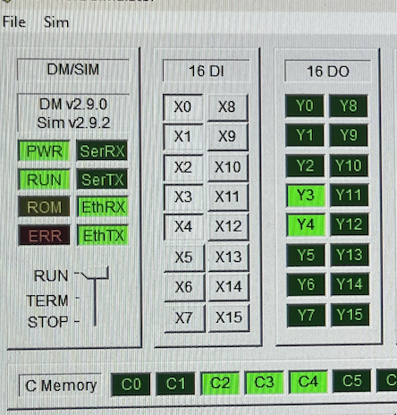
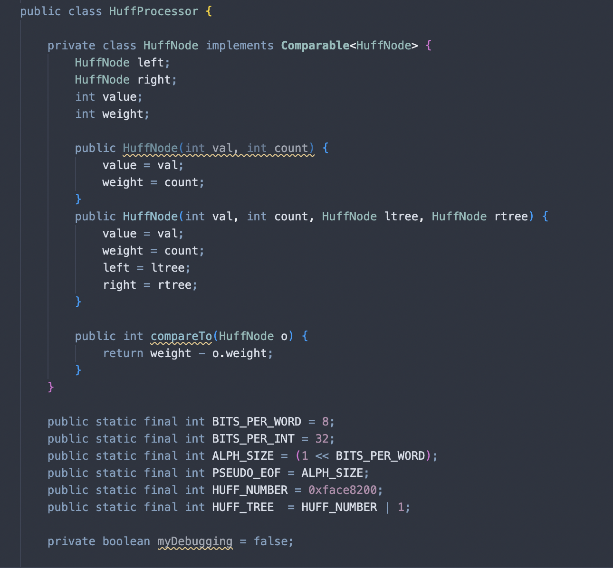
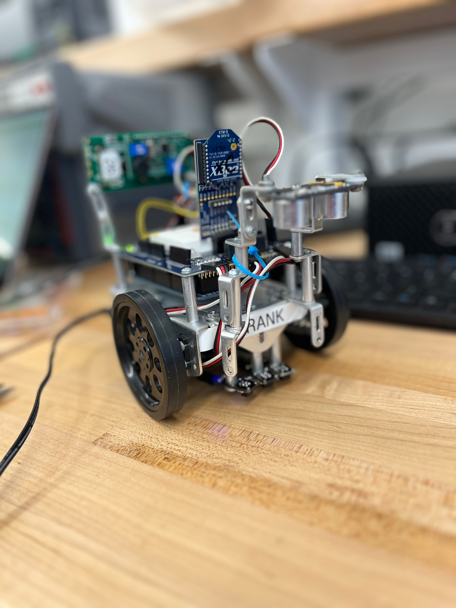

Ladder Logic Adder
A 4-bit adder built in Do-more ladder logic.

A 4-bit adder built in Do-more ladder logic.

Implemented a Huffman encoding and decoding system to compress text files

An Arduino-controlled robot that won a line-following challenge in an introductory ECE class.

A personal website showcasing my project experience.